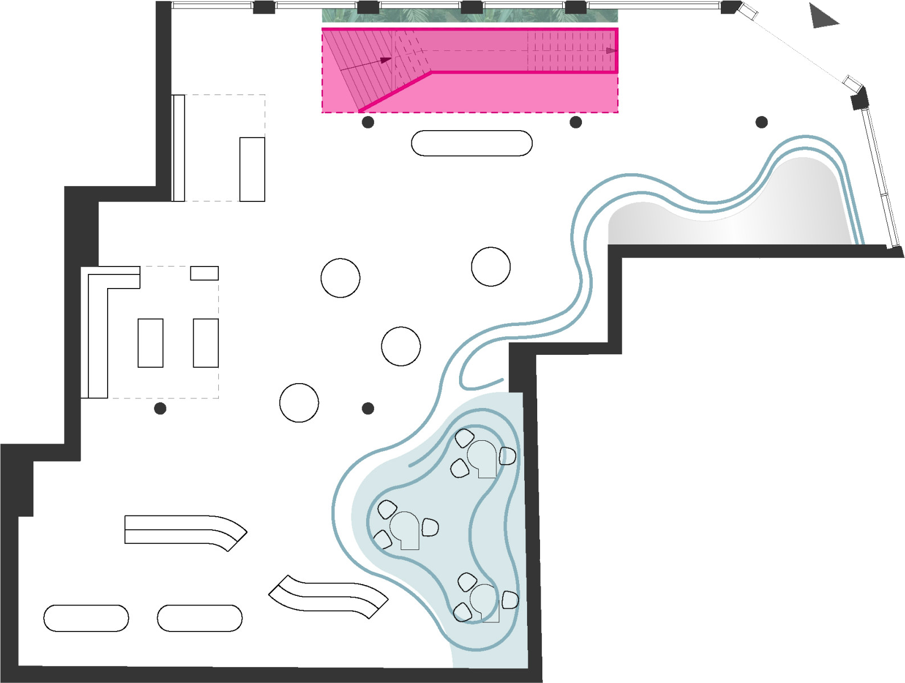
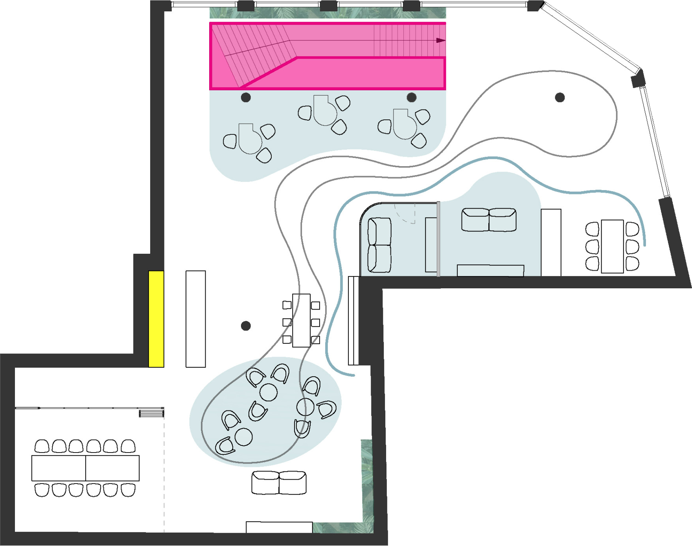

Waterkant - Fluide Formen zitieren das umgebende Wasser der Hafenstadt und treffen im neuen Store auf die klaren Kanten der Bestandsarchitektur.
Die wellenförmige Deckeninstallation zieht fast schwebend ihre Bahnen durch den Raum und unterstützt die Zonierung und den Bewegungsfluss sowie sie auch ein natürliches Gegengewicht zur abgetreppten Raumform schafft.
Spiegelflächen als Highlight imitieren die Wasseroptik und reflektieren Licht und Umfeld. Regional gestaltete Grafiken und spezielle Materialien wie Containerblech holen das Stadtbild unverwechselbar ins Innere und lassen Marke und Standort ineinanderfließen. Über die großzügigen geschossübergreifenden Schaufensterflächen des Eckgebäudes
wird die Innenarchitektur auch nach außen hin sichtbar und erlebbar und macht den Store zum Flagship Store.
Die „klare Hülle“ als Konstante des Telekom Retail Designs rahmt den gesamten Innenraum mit schwarzen Decken und Wänden und bringt die Magenta Markenwelt zum Leuchten.
Spektakulär: Die neu geplante Treppe, die ganz in Magenta strahlt und durch transluzente Seitenführungen die Marke nach innen und außen transportiert. Als zentrales Element gibt sie dem Welcome-Counter eine dramatische Kulisse, die das Thema des Wassers über lebendige Lichtspiele subtil inszeniert.
Green Magenta - In Hamburger Flagship Store wird auch das Thema Nachhaltigkeit zu einem Teil der Erlebniswelt. Das Shop-Konzert setzt bewusst auf Nachhaltigkeit und Umweltbewusstsein, etwa durch den Einsatz von recycelten und Cradle to Cradle zertifizierten Materialien. Eine Deckenbegrünung highlightet bewusst den zentralen Welcome-Bereich im Erdgeschoss und unterstützt Atmosphäre und Raumklima. Die Hängepflanzen sind schon von außen sichtbar und verbinden im Innenraum optisch die Geschosse.
Lebendige Erlebniswelt - Die lebendige Innenarchitektur und visionäre Ideen für eine unverwechselbare Inszenierung von Marke, Produkten, Service und Beratung setzen an der „Waterkant“ ein klares Statement. Und zeigen, was zukunftsfähiges Retail Design kann – und können muss. Aber auch die Möglichkeit Im Obergeschoss Workshops und Events stattfinden zu lassen macht den Shop beliebt. Eine von Hamburg inspirierte Kaffeebar lädt zum verweilen ein. Seien es die Mövenleuchten, die Containerwand oder die Tapete mit Lokalen Motiven, im Store wird das Thema Hamburg wiederholt subtil aufgegriffen. Zusätzlich lässt sich der Meetingraum zum Eventbereich öffnen und multifunktional nutzen.
Büro: Lepel & Lepel
Fotos: HGEsch

